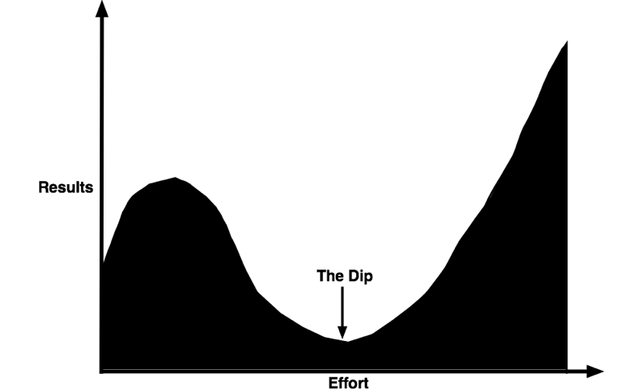

The Dip - Seth Godin
Ideas from the book The Dip by Seth Godin.
It’s about being the best in the world
- Winners quit all the time. They just quit the right stuff at the right time.
- You can’t try to do everything.
- Everyone looks for the best choice, as a result the rewards for being first are enormous.
- It’s typical for the number one in an industry to get ten times the benefit of number ten and hundred times the benefit of number hundred.
- The best means the best for your customers right now, based on what they believe, what they know, what they can afford and how they want to work.
- There are a million micromarkets, but each micromarket still has a best.
Only talented people fret about mediocrity
The Dip

- The Dip is the slog between starting and mastery.
- Scarcity is the secret to value. The Dip causes scarcity.
- Quit dead-end jobs as fast as you can. They keep you from doing something worthwhile.
What’s the point of sticking it out if you’re not going to get the benefits of being the best in the world?
- In a competitive world, adversity is your ally. The harder it gets, the better chance you have of insulating yourself from the competition.
- The reason we are here is to solve hard problems.
Real success goes to those who obsess
- If you want to be a superstar, then you need to find a field with a steep Dip - a barrier between those who try and those who succeed.
- Don’t quit in the Dip.
- There’s no reason to keep investing in something that isn’t going to get better.
- If you are going to quit, quit before you start. Reject the system. Don’t play the game if you realise you can’t be the best in the world.
Use the Dip as an opportunity to create something so extraordinary that people can’t help but talk about it, recommend it, and, yes, choose it
Quitting
- The best time to look for a new job is when you don’t need one. The time to switch jobs is before it feels comfortable.
- The problem with coping is that it never leads to exceptional performance.
- If the best you can do is cope, then you’re better off quitting.
- Quitting is better than coping because quitting frees you up to excel at something else.
- Never quit something with great long-term potential just because you can’t deal with the stress of the moment.
- The choice to stick with anything without forward progress - is a waste.
- You should outline your quitting strategy before the discomfort sets in.
- Write down under what circumstances you’re willing to quit and when. Then stick with it.
- The opposite of quitting is rededication. The opposite of quitting is an invigorated new strategy designed to break the problem apart.
- Persistent people are able to visualise the idea of light at the end of the tunnel when others can’t see it.
You’re busy defending the mediocre work your organisation does because it’s the best you can do under the circumstances (it’s not). You don’t want to quit. It’s not fun. It’s not easy. So you haven’t. But you should. You must!
Or, you could just settle for being average.
The Market
- Influencing a market is more of a hill than a wall. You can make progress, one step at a time, and as you get higher, it actually gets easier. People in the market talk to each other. They are influenced by each other. So every step of progress you make actually gets amplified.
- Choose a market that’s the right size for you.
Questions
- Is my persistence going to pay off in the long run?
- Am I engaged with one person or organisation, or do my actions in this situation spill over into the entire marketplace?
- If I quit this task, will it increase my ability to get through the Dip on something more important?
- If I was going to quit anyway, is there something dramatic I can do instead that will change the game?
- Who decides what best is?
- Can we make the world smaller?
We succeed when we do something remarkable